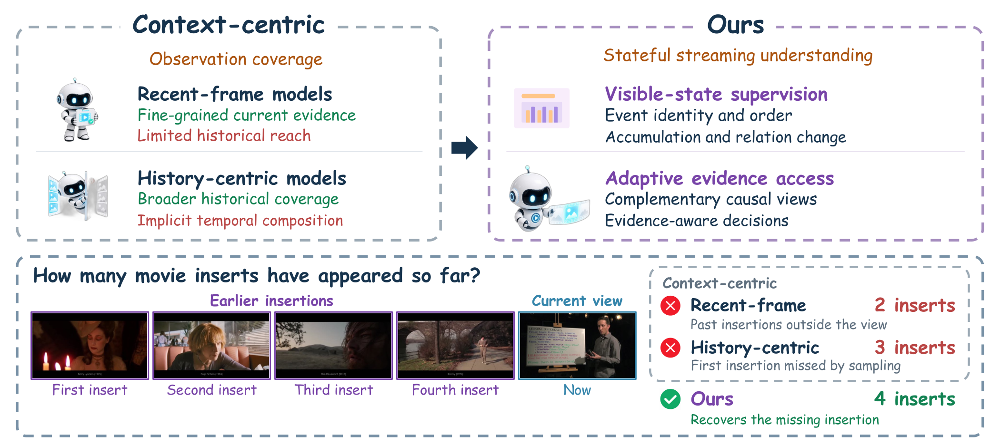
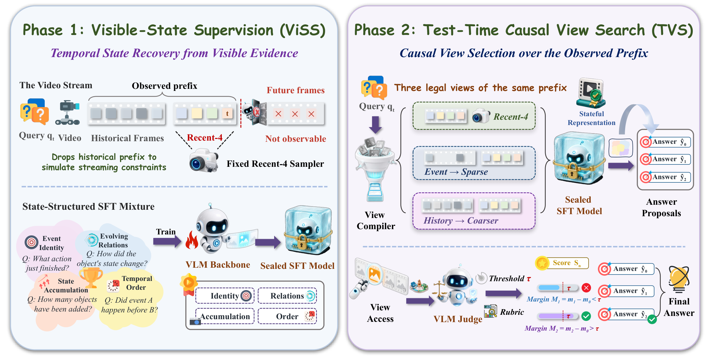
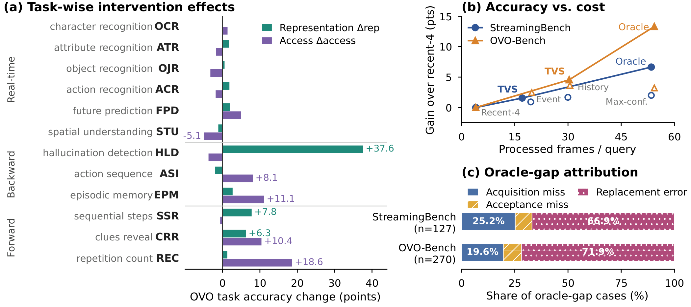
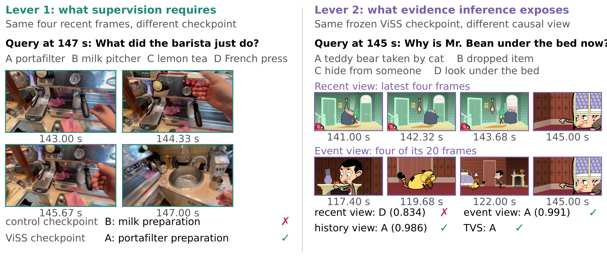

Visible-State Supervision
Train on source-grounded probes of event identity, order, accumulation, relation change, and answer sufficiency. One fresh epoch updates the language model and multimodal projector while the vision tower stays frozen.
Streaming video understanding · 2026
Supervising the Visible State:
Separating Representation from View Selection
in Streaming Video
1Westlake University2ZJU3USTC4SMU5FDU6ECNU7SJTU
Teach the distinctions that matter.
Then acquire the evidence the answer needs.

StreamingBench · ViSS + TVS
OVO-Bench · ViSS + TVS
Training examples · One epoch
The same action, seen once or three times, can receive the same label. A model can learn that label without learning to count.
We call this state under-specification: histories that differ in order, accumulation, or relations share an answer, leaving those distinctions unconstrained. Visible-State Supervision (ViSS) asks for them directly, including whether the visible evidence is sufficient to answer at all.
Test-Time Causal View Search (TVS) addresses a separate limitation. With the trained model frozen, it acquires complementary views of the observed video prefix when recent frames are insufficient.
Code: github.com/yihaohu0118/ViSS
Project Homepage: yihaohu0118.github.io/ViSS/
Two controlled interventions separate representation learning from evidence access.

Train on source-grounded probes of event identity, order, accumulation, relation change, and answer sufficiency. One fresh epoch updates the language model and multimodal projector while the vision tower stays frozen.
Start with four recent frames. Acquire a sparse event view when the recent confidence margin is low; consult compact history when the proposals disagree. Separate acquisition and commitment thresholds are fixed on a source-disjoint holdout.
Full evaluation splits: 2,495 StreamingBench queries and 3,035 OVO-Bench queries. All controlled comparisons share one backbone and official scoring.
One Qwen3-VL-8B backbone. First fix recent-4 access; then freeze the ViSS checkpoint and enable TVS. Higher is better.
| Model / view policy | StreamingBench ↑ | OVO-Bench ↑ |
|---|---|---|
| Qwen3-VL-8B · recent-4 | 80.52 | 58.97 |
| ViSS · recent-4 | 84.77 | 65.21 |
| ViSS + TVS | 86.33 | 69.77 |
Author-reported results from the manuscript. The source release includes scoring utilities, not saved predictions. See full protocols and tables ↗
+1.72 OVO points
The mean ViSS gain over strict-matched generic supervision across three paired seeds is 1.72 OVO points (95% paired-bootstrap CI: 0.80–2.60). StreamingBench remains comparable.
17.08 frames per query
TVS reaches 86.33% with 17.08 processed frames on average, compared with 86.45% and 29.97 frames for a single full-history call. TVS averages 1.60 model calls.

The remaining oracle gap is conditional on correct proposals being available. Strict replay finds that replacing an already correct answer dominates these selection errors; the calibrated commitment margin does not show a consistent aggregate benefit.
Changing the checkpoint and changing the view can repair different failures. These qualitative examples come directly from the paper.

The source release covers data construction, training, inference, policy replay, and scoring.
CPU checks and GPU runtime setup.
02Source-grounded records and media bindings.
03One-epoch ViSS training recipe.
04View proposals, TVS, and official scoring.
The tests use synthetic inputs and do not download model weights or benchmark media.
Trained ViSS weights, training records, benchmark media, and calibration artifacts are obtained or prepared separately. See the repository for the release contents.
git clone https://github.com/yihaohu0118/ViSS.git
cd ViSS
python -m venv .venv
source .venv/bin/activate
python -m pip install -e ".[test]"
python -m pytest -q testsPython 3.10+ · Bash shown; use the platform-specific activation command on Windows.
If you use ViSS or TVS in your research, please cite the accompanying manuscript.
Download BibTeX ↗@misc{hu2026viss,
title={Supervising the Visible State: Separating Representation from View Selection in Streaming Video},
author={Yihao Hu and Pan Wang and Yitong Lin and Zhihao Wen and Deyuan Liu and Hang Wang and Mingda Wan and Yiwen Zhao and Yutong Li and Yuchen Mao and Tao Lin},
year={2026},
note={Manuscript},
url={https://yihaohu0118.github.io/ViSS/}
}